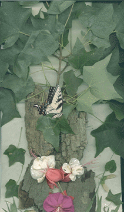

Beth Strassman

"The Tree Hole"
"This is a collage of the sugar maple (A. Saccarum) with a tree hole that sits in my yard. It has been growing here for
about 125 years. The tree has a 10 foot circumference and is approximately 70 feet tall. I made the collage out of bark,
leaves, seeds, and sticks from the sugar maple. I added the fuschia flowers from the tree hole; finally, I put in some grass and a
Tiger Swallowtail butterfly that I found near the tree. This tree and the hole in it give us much pleasure as we watch it
throughout the year. It is one of the first trees you see when you drive down the street when the leaves turn in the fall. They
turn a beautiful golden yellow-orange. I hope the collage shows the beauty of this tree as I see it."
-Beth Strassman
© Beth Strassman
"The Tree Hole"
Natural elements from the tree were used for this project: bark, leaves, sticks, seeds, fuschia flowers, grass, and a butterfly.
Common Name: Sugar Maple
Latin Name: A. Saccarum
Circumference: 10 feet
Location: Chesterhill, Ohio USA
 Return to Main Page
Return to Main Page
Comments
Please send e-mail to: June Julian jj68@nyu.edu